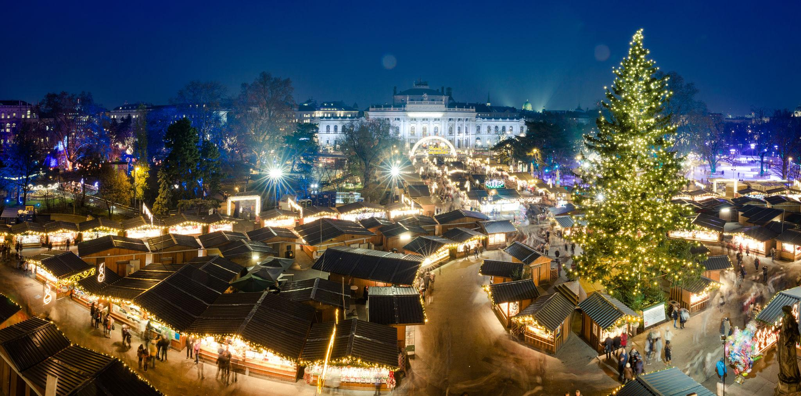
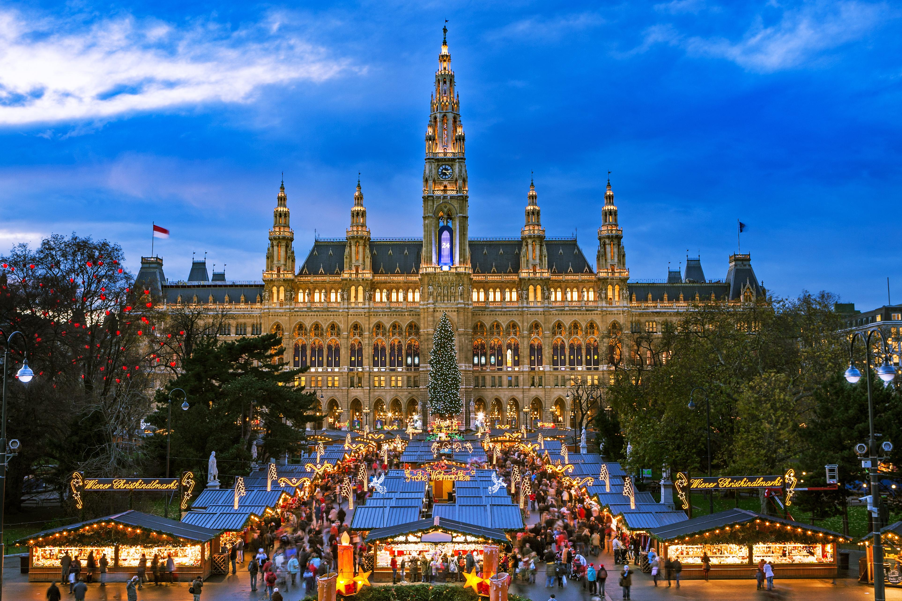
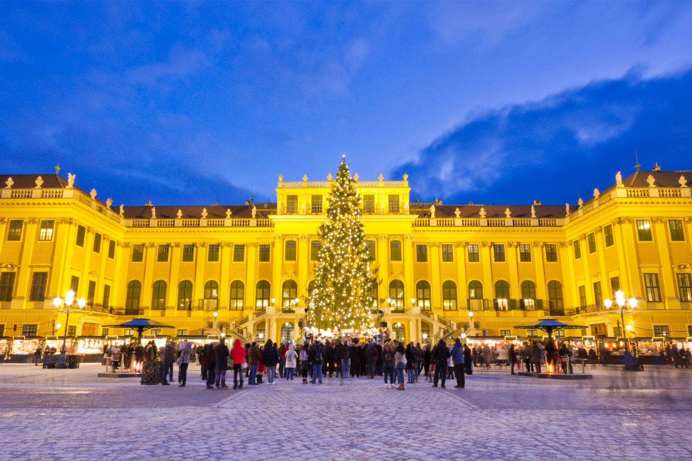
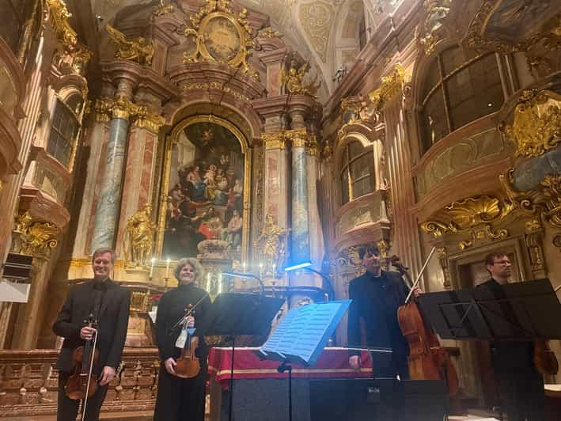
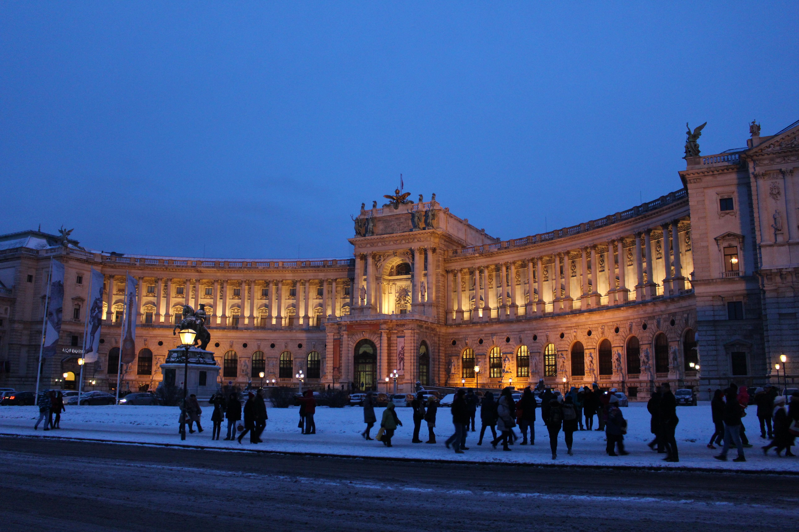
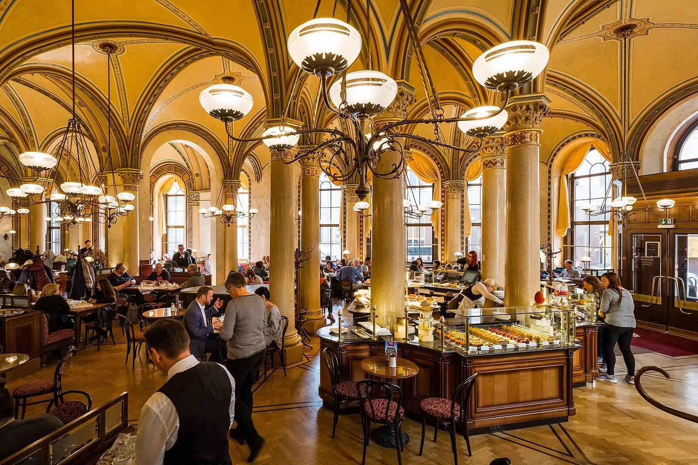
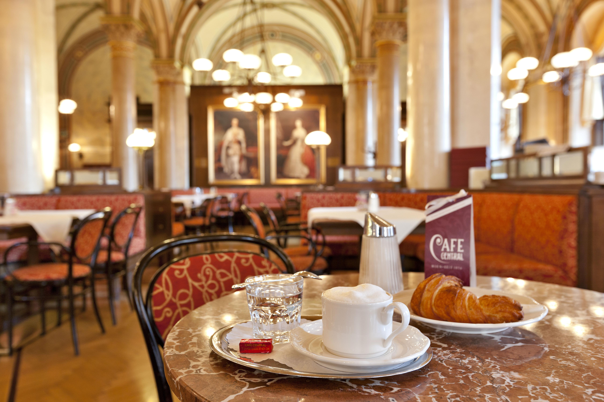

VIENNA, IN WINTER
Imperial streets, Christmas lights & a little Mozart.
A CITY STRAIGHT OUT OF A FAIRYTALE
There's something special about Vienna in December. Grand imperial buildings, charming cobbled streets, the smell of roasted chestnuts and Christmas markets glowing against the winter evening. We'll spend our days exploring this beautiful city, discovering its cafés and soaking up the festive atmosphere — before heading off to Budapest for the next chapter of our adventure.
THE MAGIC OF VIENNA'S CHRISTMAS MARKETS

RATHAUSPLATZ CHRISTMAS MARKET
One of Vienna's most iconic Christmas markets, set against the magnificent City Hall. Explore festive stalls, sparkling decorations, the towering Christmas tree and the unmistakable magic of a Viennese Christmas.
SCHÖNBRUNN PALACE CHRISTMAS MARKET
Set against the magnificent Schönbrunn Palace, this festive market brings together traditional decorations, charming stalls and a beautiful imperial setting. A lovely place to soak up Vienna's Christmas atmosphere.

A CHRISTMAS EVENING OF MOZART

A special Christmas evening awaits at Vienna's beautiful Annakirche. We'll spend the night surrounded by magnificent Baroque architecture, listening to the timeless music of Mozart, Haydn and Mendelssohn.
A CITY OF IMPERIAL GRANDEUR
Vienna's story is written in its magnificent palaces, grand boulevards and elegant architecture. We'll discover the grandeur of the Habsburg era, admire the city's beautiful historic streets and experience a little of the imperial charm that makes Vienna so special.

A PAUSE IN A VIENNESE COFFEEHOUSE


Vienna is best enjoyed at a slower pace. We'll step into the legendary Café Central, admire its elegant interiors and settle down over a Viennese coffee and something sweet. A little time to relax, soak up the atmosphere and enjoy the city's timeless café culture.